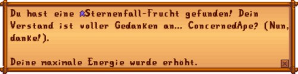
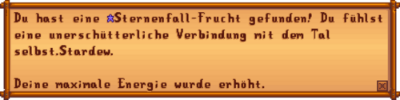

Sternenfall-Frucht
| Sternenfall-Frucht | |
| Eine mysteriöse Frucht, die diejenigen, die sie essen, stärker werden lässt. Der Geschmack ist wie ein Traum... Eine mächtige und persönliche Erfahrung, dennoch schwer, sie anderen zu beschreiben. | |
| Information | |
| Quelle | Verschiedene |
| Buff | |
| Buff Duration | |
| Energie / Gesundheit |
|
| Verkaufspreis | Unverkäuflich |
Eine Sternenfall-Frucht ist ein seltener Spezial-Gegenstand, der die Maximale Energie des Spielers um 34 Punkte erhöht. Der Spieler konsumiert die Sternenfall-Frucht sofort, wenn sie erhalten wird. Es ist nicht möglich sie dem Spielerinventar hinzuzufügen oder sie anderweitig aufzubewahren.
In jedem Spielstand stehen maximal sieben Sternenfall-Früchte zur Verfügung, welche zusammen 508 maximale Energie ergeben und den anfänglichen Wert von 270 nahezu verdoppeln.
Fundorte
Es kann nur je eine Sternenfall-Frucht aus folgenden Quellen bezogen werden:
- Verkauft für
 2.000 beim Sterntautaler Volksfest.
2.000 beim Sterntautaler Volksfest. - In einer Schatzkiste auf Ebene 100 in den Minen.
- Wird vom Ehepartner oder Mitbewohner erhalten, nachdem die Freundschaft 12,5
 erreicht; wird stattdessen ein Spieler im Mehrspieler geheiratet, erscheint eine Sternenfall-Frucht in einer Geschenkbox vor dem Spieler, wenn dieser nach der Hochzeit sein Haus betritt. Man kann unabhängig von Scheidung oder erneutem Heiraten insgesamt nur eine Sternenfall-Frucht erhalten.
erreicht; wird stattdessen ein Spieler im Mehrspieler geheiratet, erscheint eine Sternenfall-Frucht in einer Geschenkbox vor dem Spieler, wenn dieser nach der Hochzeit sein Haus betritt. Man kann unabhängig von Scheidung oder erneutem Heiraten insgesamt nur eine Sternenfall-Frucht erhalten. - Verkauf von Krobus für
 20.000 G in der Kanalisation.
20.000 G in der Kanalisation. - Von Altmeister Cannoli in den Geheimen Wäldern erhalten, nachdem man ihm eine Süße Edelsteinbeere geopfert hat.
- Erhalten in einem Brief von Willy, nach Erhalt des Meisterangler-Erfolges (Jeden Fisch mindestens einmal gefangen).
- Belohnung für den Erfolg Eine vollständige Sammlung (alle 95 Gegenstände ans Museum gespendet).
Text
Wenn die Sternenfall-Frucht vom Spieler konsumiert wird, wird einer von zwei möglichen Texten angezeigt. Beide beziehen sich auf die Angabe, die der Spieler zu Spielbeginn bei der Charaktererstellung im Feld [Mag gerne:] eingetragen hatte:
- "Es ist merkwürdig, aber der Geschmack erinnert dich an [Mag gerne]."
- "Dein Verstand ist voller Gedanken an [Mag gerne]."
Easter-Eggs
Falls "ConcernedApe" bei [Mag gerne:] angegeben wurde:

Falls etwas, das das Wort "Stardew" beinhaltet, bei [Mag gerne:] angegeben wurde:

- Beachte, dass das "S" in "Stardew" und das "C" und "A" in "ConcernedApe" großgeschrieben werden muss.
Trivia
- Sternenfall-Früchte hießen in der Entwicklungsphase "Kosmische Früchte" (Cosmic Fruit).(forum post)
- Willy erwähnt eine Sternenfall-Frucht in seinen Erzählungen beim Fest des Wintersterns. Er sagt, dass Manche behaupten, dass die Sternenfall-Frucht mit dem Winterstern in Zusammenhang steht, der nur vom Sternentautal aus sichtbar ist.
- Vor Version 1.3 konnten Sternenfall-Früchte ins Inventar genommen werden und dann in einer Kiste verstaut, als (allgemein gehasstes verschenkt), im Ausstellstand des Sterntautaler Volksfestes ausgestellt oder im Versandbehälter verkauft werden.
Verkauft für
7.777 G
Im Ausstellstand platziert
Erfolge
Das Finden von sieben Sternenfall-Früchten schaltet einen Steam-spezifischen Erfolg frei:
 Das Geheimnis der Sternenfrüchte (Finde jede Sternenfrucht)
Das Geheimnis der Sternenfrüchte (Finde jede Sternenfrucht)
Geschichte
- 1.3: Sternenfall-Frucht zu Ehepartnern im Mehrspieler hinzugefügt. Fehler behoben, bei dem Sternenfall-Früchte ins Inventar aufgenommen werden konnten.
- 1.4: Fehler behoben, durch den zusätzlicher Text am Ende des "Mag gerne" Dialogtextes angehängt wurde.